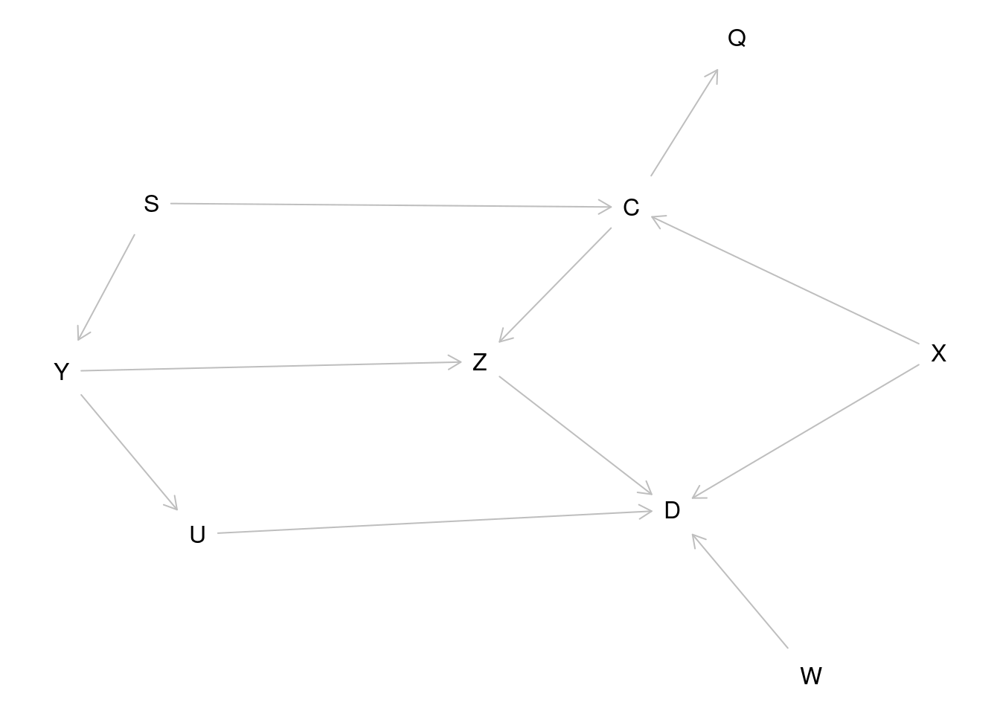

Chapter 9 Causal inference
9.1 Proper adjustment for confounding in regression models
The first exercise of this session will ask you to simulate some data according to pre-specified causal structure (don’t take the particular example too seriously) and see how you should adjust the analysis to obtain correct estimates of the causal effects.
Suppose one is interested in the effect of beer-drinking on body weight. Let’s assume that in addition to the potential effect of beer on weight, the following is true in reality:
- Beer-drinking has an effect on the body weight.
- Men drink more beer than women
- Men have higher body weight than women
- People with higher body weight tend to have higher blood pressure
- Beer-drinking increases blood pressure
The task is to simulate a dataset in accordance with this model, and subsequently analyse it to see, whether the results would allow us to conclude the true association structure.
Sketch a causal graph (not necessarily with R) to see, how should one generate the data
Suppose the actual effect sizes are following:
People who drink beer weigh on average \(2kg\) more than those who don’t.
The probability of beer-drinking is 0.2 for females and 0.7 for males
Men weigh on average \(10kg\) more than women.
One kg difference in body weight corresponds in average to \(0.5mmHg\) difference in (systolic) blood pressures.
Beer-drinking increases blood pressure by \(10mmHg\) in average.
Beer-drinking has no effect on body weight.
The R commands to generate the data are:
bdat <- data.frame(sex = c(rep(0, 500), rep(1, 500)))
# a data frame with 500 females, 500 males
bdat$beer <- rbinom(1000, 1, 0.2 + 0.5 * bdat$sex)
bdat$weight <- 60 + 10 * bdat$sex + rnorm(1000, 0, 7)
bdat$bp <-
110 + 0.5 * bdat$weight + 10 * bdat$beer + rnorm(1000, 0, 10)Now fit the following models for body weight as dependent variable and beer-drinking as independent variable. Look, what is the estimated effect size:
Unadjusted (just simple linear regression)
Adjusted for sex
Adjusted for sex and blood pressure
What would be the conclusions on the effect of beer on weight, based on the three models? Do they agree? Which (if any) of the models gives an unbiased estimate of the actual causal effect of interest?
How can the answer be seen from the graph?
Now change the data-generation algorithm so, that in fact beer-drinking does increase the body weight by 2kg. Look, what are the conclusions in the above models now. Thus the data is generated as before, but the weight variable is computed as:
- Suppose one is interested in the effect of beer-drinking on blood pressure instead, and is fitting a) an unadjusted model for blood pressure, with beer as an only covariate; b) a model with beer and sex as covariates. Would either a) or b) give an unbiased estimate for the effect? (You may double-check whether the simulated data is consistent with your answer).
9.2 DAG tools in the package dagitty
There is a software DAGitty (http://www.dagitty.net/) and also an R package dagitty that can be helpful in dealing with DAGs. Let’s try to get the answer to the previous exercise using this package.
Let’s recreate the graph on the lecture slide 23 (but omitting the direct causal effect of interest, \(C \rightarrow D\)):

To get a more similar look as on the slide, we must supply the coordinates (x increases from left to right, y from top to bottom):
coordinates(g) <-
list(
x =
c(
S = 1, C = 1, Q = 1, Y = 2, Z = 2,
X = 2, U = 3, D = 3, W = 3
),
y =
c(
U = 1, Y = 1, S = 1, Z = 2, C = 3,
D = 3, X = 4, W = 4, Q = 4
)
)
plot(g)Let’s look at all possible paths from \(C\) to \(D\):
As you see, one path contains a collider and is therefore a closed path and the others are open.
Let’s identify the minimal sets of variables needed to adjust the model for \(D\) for, to obtain an unbiased estimate of the effect of \(C\). You can specify, whether you want to estimate direct or total effect of \(C\):
adjustmentSets(
g, exposure = "C", outcome = "D", effect = "direct"
)
adjustmentSets(
g, exposure = "C", outcome = "D", effect = "total"
)Thus, for total effect estimation one should adjust for \(X\) and either \(Y\) or \(S\), whereas for direct effect estimation, one would also need to adjust for \(Z\).
You can verify that, these are the variables that will block all open paths from \(C\) to \(D\).
Now try to do the beer-weight exercise using dagitty:
Create the DAG and plot it
What are the paths from WEIGHT to BEER?
Will you get the same recommendation for the adjustment variable selection as you found before?
9.3 Instrumental variables estimation: Mendelian randomization
Suppose you want to estimate the effect of Body Mass Index (BMI) on blood glucose level (associated with the risk of diabetes). Let’s conduct a simulation study to verify that when the exposure-outcome association is confounded, but there is a valid instrument (genotype), one obtains an unbiased estimate of the causal effect.
- Start by generating the genotype variable as Binomial(2,p), with \(p=0.2\) (and look at the resulting genotype frequencies):
- Also generate the confounder variable U
- Generate a continuous (normally distributed) exposure variable \(BMI\) so that it depends on \(G\) and \(U\).
Check with linear regression, whether there is enough power to get significant parameter estimates.
For instance:
- Finally generate \(Y\) (“Blood glucose level”) so that it depends on \(BMI\) and \(U\) (but not on \(G\)).
- Verify, that simple regression model for \(Y\), with \(BMI\) as a covariate, results in a biased estimate of the causal effect (parameter estimate is different from what was generated)
How different is the estimate from 0.1?
Estimate a regression model for \(Y\) with two covariates, \(G\) and \(BMI\). Do you see a significant effect of \(G\)? Could you explain analytically, why one may see a significant parameter estimate for \(G\) there?
Find an IV (instrumental variables) estimate, using G as an instrument, by following the algorithm in the lecture notes (use two linear models and find a ratio of the parameter estimates). Does the estimate get closer to the generated effect size?
mgx <- lm(BMI ~ G, data = mrdat)
ci.lin(mgx) # check the instrument effect
bgx <- mgx$coef[2] # save the 2nd coefficient (coef of G)
mgy <- lm(Y ~ G, data = mrdat)
ci.lin(mgy)
bgy <- mgy$coef[2]
causeff <- bgy / bgx
causeff # closer to 0.1?- A proper simulation study would require the analysis to be run several times, to see the extent of variability in the parameter estimates.
A simple way to do it here would be using a
for-loop. Modify the code as follows (exactly the same commands as executed so far, adding a few lines of code to the beginning and to the end):
n <- 10000
# initializing simulations:
# 30 simulations (change it, if you want more):
nsim <- 30
mr <- rep(NA, nsim) # empty vector for the outcome parameters
for (i in 1:nsim) { # start the loop
## Exactly the same commands as before:
mrdat <- data.frame(G = rbinom(n, 2, 0.2))
mrdat$U <- rnorm(n)
mrdat$BMI <-
with(mrdat, 25 + 0.7 * G + 2 * U + rnorm(n))
mrdat$Y <-
with(mrdat, 3 + 0.1 * BMI - 1.5 * U + rnorm(n, 0, 0.5))
mgx <- lm(BMI ~ G, data = mrdat)
bgx <- mgx$coef[2]
mgy <- lm(Y ~ G, data = mrdat)
bgy <- mgy$coef[2]
# Save the i'th parameter estimate:
mr[i] <- bgy / bgx
} # end the loopNow look at the distribution of the parameter estimate:
- (optional) Change the code of simulations so that the assumptions are violated: add a weak direct effect of the genotype G to the equation that generates \(Y\):
Repeat the simulation study to see, what is the bias in the average estimated causal effect of \(BMI\) on \(Y\).
- (optional) Using library
semand functiontsls, one can obtain a two-stage least squares estimate for the
causal effect and also the proper standard error. Do you get the same estimate as before?
if (!("sem" %in% installed.packages())) install.packages("sem")
library(sem)
summary(tsls(Y ~ BMI, ~G, data = mrdat))(There are also several other R packages for IV estimation and Mendelian Randomization (MendelianRandomization for instance))
9.4 Why are simulation exercises useful for causal inference?
If we simulate the data, we know the data-generating mechanism and the true causal effects. So this is a way to check, whether an analysis approach will lead to estimates that correspond to what is generated. One could expect to see similar phenomena in real data analysis, if the data-generation mechanism is similar to what was used in simulations.